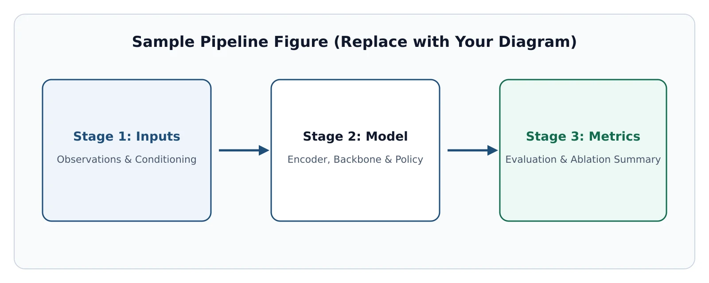

This is an example post for checking the blog's typography. The structure follows Lil'Log: a top navigation bar, a single reading column, a collapsible table of contents, and a citation block with references at the end. Colours, backdrop and the name in the header come from the homepage. Every post has an English and a Chinese version; switch with the pill above the title.
Paragraphs and Emphasis
The reading column is about 900px wide, matching the homepage. Text is set in Inter, with italics for terms such as diffusion model, bold for key conclusions, links with a thin underline, and inline code like flow_grpo.step().
Each paragraph should carry one idea. Paper notes usually read best in the order "what the paper does, why it works, where it falls short", so a reader can grasp the structure from the section headings alone.
Lists
- Keep each item to one or two lines; split longer ones into paragraphs.
- Use an ordered list when the sequence matters.
- Introduce a list with a sentence that says what it is about.
Quotes
A quote carries a navy rule on the left. Use it for passages from a paper or someone else's view.
Code
Code blocks use a dark background, as on Lil'Log:
def reward(video, camera):
depth = estimate_depth(video)
return consistency(depth, camera) # higher is betterTables
| Method | FID ↓ | CLIP ↑ | 3D Consistency ↑ |
|---|---|---|---|
| Baseline | 18.4 | 0.301 | 0.62 |
| + RL fine-tuning | 17.9 | 0.305 | 0.71 |
| Ours | 16.2 | 0.312 | 0.78 |
The numbers only illustrate the layout and do not come from any real experiment.
Figures

Citation
Cited as:
Feng, Chaoran. (Nov 2026). Example Post: Blog Typography Sample. Chaoran Feng's Blog. https://www.falcary.com/blogs/example/.
Or
@article{feng2026example,
title = "Example Post: Blog Typography Sample",
author = "Feng, Chaoran",
journal = "falcary.com",
year = "2026",
month = "Nov",
url = "https://www.falcary.com/blogs/example/"
}References
- Weng, Lilian. Lil'Log. Layout reference for this blog.
- Example reference. Conference on Example Studies, 2026.